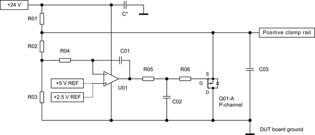
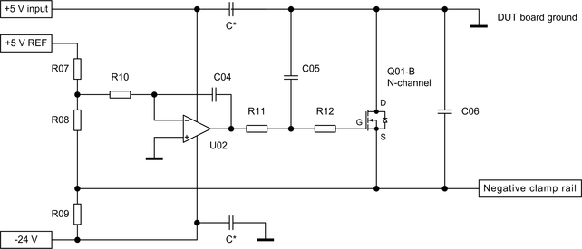

HV protection - Clamp regulator
The clamp regulator keeps the voltage at the clamp rail at a defined level and absorbs the energy of the high-voltage pulses. One clamp regulator is required for each positive or negative clamp rail.
Positive clamp regulator
The following diagram shows a clamp regulator for a positive clamp rail. The scaling factor of the resistors R02 and R03 and the voltage reference define the positive clamp voltage. The P-channel FET Q01-A keeps the voltage on the clamp rail at the defined level and absorbs the energy of the high-voltage pulses. The source pin of the FET is connected to the positive clamp rail while the drain pin is connected to the DUT board ground. This will minimize the reaction time of the circuit. Resistor R01 defines a small bias current for the FET and the clamp rail.

The circuit requires a +5.0 V reference voltage for clamp voltages above +5.0 V or a +2.5 V reference voltage for clamp voltages between +2.5 V and +5.0 V.
The voltage at the positive clamp rail is calculated as follows:
VClampRail = VReference * ( ( R02 / R03 ) + 1)
with
VClampRail = Resulting voltage at the clamp rail
VReference = Selected reference voltage +2.5 V or +5.0 V
Negative clamp regulator
The negative clamp regulator uses a similar circuit, but the N-channel FET Q01-B now keeps the voltage on the clamp rail at the defined level and absorbs the energy of the high-voltage pulses. The source pin of the FET is connected to the negative clamp rail while the drain pin is connected to the DUT board ground to minimize the reaction time of the circuit. The scaling factor of the resistors R07 and R08 and the +5 V reference voltage define the negative clamp voltage. The bias current for the FET and the clamp rail is limited by resistor R09.

The operational amplifier is supplied by the +5 V input voltage and the -24 V output voltage of the DC supply. This will extend the output voltage range to the required value for low negative clamp voltages. The circuit requires a +5.0 V reference voltage for all clamp voltages.
The voltage at the negative clamp rail is calculated as follows:
VClampRail = -1.0 * VReference * R08 / R07
with
VClampRail = Resulting voltage at the clamp rail
VReference = Reference voltage +5.0 V
Hints for the layout
High-current pulses together with the resistance and inductivity of the connections to the clamp regulators will always increase the voltage on the protected lines. Some design rules must be considered to minimize the effect of these parasitic characteristics.
We recommend therefore using a low resistive and low inductive design for the following connections:
- The traces from the signal lines via the clamp diodes to the clamp rails (see HV protection - Clamp diodes).
- The complete clamp rails from the clamp diodes to the discharging FETs Q01-A and Q02-B.
- The traces from FETs Q01-A and Q02-B to DUT board ground.
- The traces from DUT board ground to the ground of the high-voltage cards.
- Refer to the diagram in HV protection - Recommended protection circuitry for more information: Low-impedance traces are to be used for the complete path that is marked green.
Definition of the clamp voltage
The values of the resistors R02, R03, R07 and R08 and the bias resistors R01 and R09 are determined by the required clamp voltage. The resistors R02 and R08 must be calculated so that the resulting clamp voltage does not exceed the compliance range as defined in the following table.
| Test head card | Operating range | Compliance range | ||
|---|---|---|---|---|
| Minimum | Maximum | Minimum | Maximum | |
| DC Scale AVI64 | -40.0 V | +80.0 V | -44.0 V | +84.0 V |
| DC Scale DPS128/DPS64 HC | -2.5 V | +7.0 V | -6.0 V | +12.0 V |
| DC Scale DPS128/DPS64 HV | -6.0 V | +15.0 V | -7.0 V | +16.0 V |
| DC Scale FVI161) | -60.0V | +120.0 V | -200.0 V | +200.0 V |
| DC Scale PVI81) | -80.0 V | +80.0 V | -160.0 V | +160.0 V |
|
DC Scale UHC41) |
0.0 V | +4.0 V | -3.0 V | +10.0 V |
| DC Scale XPS2562) | -2.5 V | +7.0 V | -4.5 V | +7.5 V |
| MBAV8+ measuring units1) | -4.0 V | +4.0 V | -5.0 V | +5.0 V |
| MBAV8+ source units1) | -3.5 V | +3.5 V | -5.0 V | +5.0 V |
| PS 1600 | -1.5 V | +6.5 V | -3.0 V | +8.0 V |
| PS 1600 BADC | -3.0 V | +8.0 V | -3.0 V | +8.0 V |
| PS 1600 HV | 0.0 V | +13.4 V | -6.0 V | +16.0 V |
Bill of materials
The following table lists the recommended materials for the positive and negative clamp regulators.
| Reference designator | Description | Comment | |
|---|---|---|---|
| Positive clamp regulator | Negative clamp regulator | ||
| U01 | U02 | OPA172 | High-voltage CMOS operational amplifiers, available in single, dual or quad packages. |
| Q01-A | Q01-B | FDD8424H | Dual N/P-channel MOSFET. |
| R01 | 10 kΩ | The voltage drop at this resistor and the resistor value defines the bias current for the positive clamp regulator. | |
| R02 | See table below | The combination of R02 and R03 defines the clamp voltage of the positive clamp regulator. | |
| R03 | 10 kΩ | ||
| R04 | R10 | 100 kΩ | |
| R05 | R11 | 1 kΩ | |
| R06 | R12 | 21.5 Ω | |
| R07 | 100 kΩ | ||
| R08 | See table below | The combination of R07 and R08 defines the clamp voltage of the negative clamp regulator. | |
| R09 | 20 kΩ | The voltage drop at this resistor and the resistor value defines the bias current for the negative clamp regulator. | |
| C01 | C04 | 1 nF ceramic capacitor | |
| C02 | C05 | 10 nF ceramic capacitor | |
| C03 | C06 | 1 μF | |
| C* | C* | 100 nF ceramic capacitor | Minimum one capacitor must be connected across the supply pins of the operational amplifier. |
Reference voltage and reference resistors
The following table specifies the reference voltage and the reference resistor R02 of the positive clamp regulators and the resistor R08 of the negative clamp regulators. It is assumed that separate clamp rails are available for each of the card types. The best fit values must be selected if the clamp regulators are used for more than one card type due to limited space on the DUT board.
| Card to protect | Positive regulator reference | Positive regulator | Negative regulator | |||
|---|---|---|---|---|---|---|
| R02 | Resulting voltage | R08 | Resulting voltage | |||
| DC Scale DPS128/DPS64 HC | +5.0 V | 7.15 kΩ | 9.6 V | 64.9 kΩ | -4.2 V | |
| DC Scale DPS128/DPS64 HV | +5.0 V | 18.7 kΩ | 15.4 V | 110.0 kΩ | -6.5 V | |
|
DC Scale UHC41) |
+5.0 V | 1.96 kΩ | 7.0 V | 10.0 kΩ | -1.5 V | |
| MBAV8+ measuring units1) | +2.5 V | 3.65 kΩ | 4.4 V | 68.1 kΩ | -4.4 V | |
| MBAV8+ source units1) | +2.5 V | 3.65 kΩ | 4.4 V | 68.1 kΩ | -4.4 V | |
| PS 1600 | +5.0 V | 2.49 kΩ | 7.2 V | 24.9 kΩ | -2.2 V | |
| PS 1600 BADC | +5.0 V | 3.48 kΩ | 7.7 V | 33.2 kΩ | -2.7 V | |
| PS 1600 HV | +5.0 V | 17.4 kΩ | 14.7 V | 40.2 kΩ | -3.0 V | |
Notes on the table above:
- The "Resulting voltage" includes an assumed forward voltage Uf = 1.0 V of the clamp diodes. The actual forward voltage depends on the current through the diodes.
- The "Resulting voltage" will reduce the usable operating voltage range of the PS1600 BADC from -3.0 V ... 8.0 V to -2.0 V ... 7.0 V.
Functional changes
- Introduced in SmarTest 7.3.1
- SmarTest 7.4.0: AVI64 added
- SmarTest 7.4.3: Protection circuitry optimized.